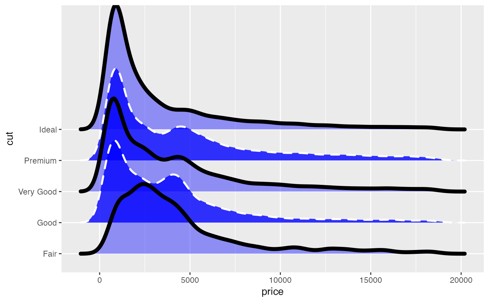
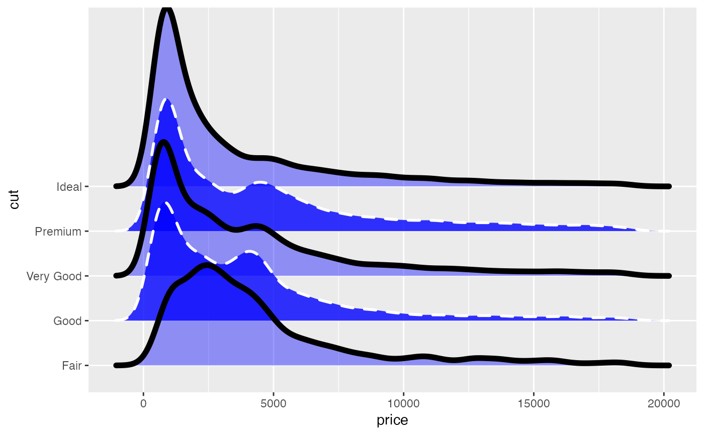

The readability of ridgeline plots can often be improved by alternating between fill colors and
other aesthetics. The various cyclical scales make it easy to create plots with this feature,
simply map your grouping variable to the respective aesthetic (e.g., fill) and then use
scale_fill_cyclical to define the fill colors between you want to alternate. Note that the
cyclical scales do not draw legends by default, because the legends will usually be wrong
unless the labels are properly adjusted. To draw legends, set the guide argument to "legend",
as shown in the examples.
scale_colour_cyclical(..., values)
scale_fill_cyclical(..., values)
scale_alpha_cyclical(..., values)
scale_linetype_cyclical(..., values)
scale_size_cyclical(..., values)Arguments
- ...
Common discrete scale parameters:
name,breaks,labels,na.value,limitsandguide. Seediscrete_scalefor more details.- values
The aesthetic values that the scale should cycle through, e.g. colors if it is a scale for the color or fill aesthetic.
Examples
library(ggplot2)
# By default, scale_cyclical sets `guide = "none"`, i.e., no legend
# is drawn
ggplot(diamonds, aes(x = price, y = cut, fill = cut)) +
geom_density_ridges(scale = 4) +
scale_fill_cyclical(values = c("#3030D0", "#9090F0"))
#> Picking joint bandwidth of 458
# However, legends can be turned on by setting `guide = "legend"`
ggplot(diamonds, aes(x = price, y = cut, fill = cut)) +
geom_density_ridges(scale = 4) +
scale_fill_cyclical(values = c("#3030D0", "#9090F0"),
guide = "legend", name = "Fill colors",
labels = c("dark blue", "light blue"))
#> Picking joint bandwidth of 458
 # Cyclical scales are also available for the various other aesthetics
ggplot(diamonds, aes(x = price, y = cut, fill = cut,
color = cut, size = cut,
alpha = cut, linetype = cut)) +
geom_density_ridges(scale = 4, fill = "blue") +
scale_fill_cyclical(values = c("blue", "green")) +
scale_color_cyclical(values = c("black", "white")) +
scale_size_cyclical(values = c(2, 1)) +
scale_alpha_cyclical(values = c(0.4, 0.8)) +
scale_linetype_cyclical(values = c(1, 2))
#> Picking joint bandwidth of 458

# Cyclical scales are also available for the various other aesthetics
ggplot(diamonds, aes(x = price, y = cut, fill = cut,
color = cut, size = cut,
alpha = cut, linetype = cut)) +
geom_density_ridges(scale = 4, fill = "blue") +
scale_fill_cyclical(values = c("blue", "green")) +
scale_color_cyclical(values = c("black", "white")) +
scale_size_cyclical(values = c(2, 1)) +
scale_alpha_cyclical(values = c(0.4, 0.8)) +
scale_linetype_cyclical(values = c(1, 2))
#> Picking joint bandwidth of 458
